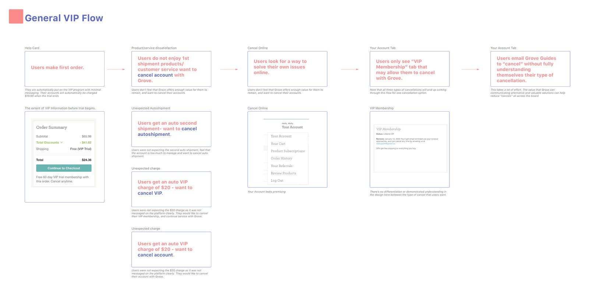
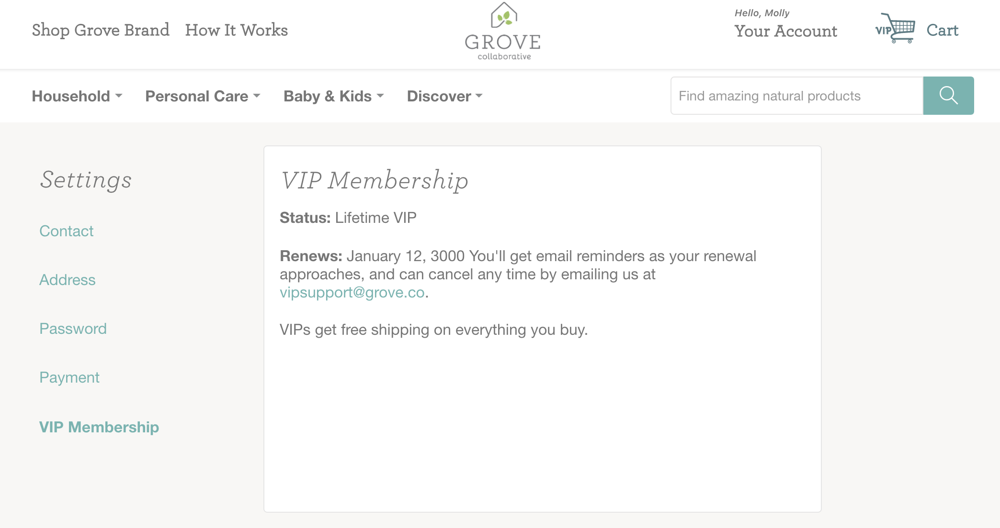
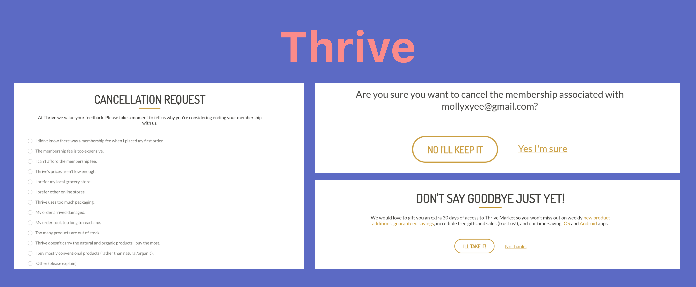

Conducting UX surveys with 40 customers and interviews with 5 customers, my team and I found that customers had trouble differentiating between 3 types of cancellation:
2. Recurring Shipment Cancellation (Auto Ship account)
3. Grove Account (Any type of shipment account)

Examination of the experience of users learning about VIP.

Our current website only provides limited information about VIP, relying heavily on emails and our customer service team to explain VIP to customers. Our relevant screen does not explain the program, the perks, or allow users to cancel.
COMPETITIVE RESEARCH

Birchbox practices: surveying users about why they're cancelling and make it a necessary field to fill out before users can successfully cancel. There's also an option to "change subscription" before clicking on "cancel subscription."

Thrive provides an additional promotional offer that adds value for customers. Their cancellation flow also includes 3 extra screens asking users if they are sure that they want to cancel.

Amazon pitches the value of their prime membership during the cancellation flow. They also offer an alternative and cheaper membership program.
FINDINGS
2. Provide relevant information: better communicating the value of Grove accounts, auto ship accounts, and VIP membership.
3. Offer alternative solutions: not all users really want to cancel VIP. It’s our job to show them how much they’re saving or the value of our program for them. By transparently communicating our value and their pain points, we can help build trust between us and our users.